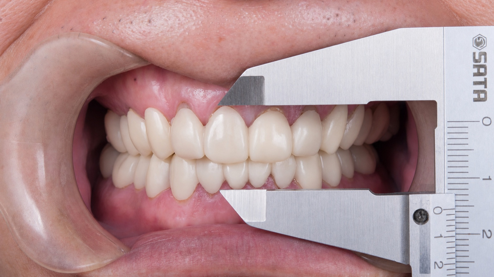

CAD restaurateur fixe
Couronnes unitaires, ponts, facettes, inlays, onlays, chapes et fichiers de restauration CAD préparés pour l'examen technique et la production.
Conception dentaire numérique pour laboratoires et cliniques
Services CAD à prix de menu pour les travaux numériques courants, avec support de planification cadré pour les réhabilitations complexes.
MW DenTech prend en charge les laboratoires dentaires et les cliniques équipées numériquement qui ont besoin d'une aide externe en matière de conception pour les couronnes et les ponts, les travaux esthétiques, les cas d'implants, les attelles, la réhabilitation occlusale complète de la bouche et la réhabilitation implantaire de l'arcade complète.
La prise en charge de base du CAD est séparée des flux de travail de réhabilitation stratégiques, de sorte que les cas de conception de routine et les cas de reconstruction en plusieurs étapes peuvent être clairement définis dès le départ.
Prise en charge compacte et orientée production du CAD pour les cas où la position clinique et la direction du traitement sont déjà définies.
Couronnes unitaires, ponts, facettes, inlays, onlays, chapes et fichiers de restauration CAD préparés pour l'examen technique et la production.

Conception du sourire, wax-up numérique, morphologie des dents antérieures, texture, symétrie et flux de travail esthétiques pris en charge par SmileCloud.

Piliers personnalisés, couronnes implantaires, restaurations vissées, conception de profil d'émergence et support de restauration implantaire CAD.

Guide d'implant unique CAD avec sites d'implants supplémentaires tarifés selon la portée, ainsi qu'une conception de chirurgie guidée par arcade partielle lorsque le plan d'implant et le protocole de manchon sont clairs.

Attelles Michigan, attelles de stabilisation, gardes de nuit, déprogrammeurs et appareil de routine CAD lorsque la position de morsure est déjà prescrite.
Soutien à la planification stratégique et spécifique aux cas qui nécessitent un séquençage, une vérification et une coordination provisoire à finale.
 AxisGuide
AxisGuide
Prise en charge de la planification éclairée par MRI/CBCT/STL pour les cas de rééducation restauratrice, orthodontique et complète TMJ-sensitive dirigés par des cliniciens.
Découvrir AxisGuide Pleine bouche
Pleine bouche
Réhabilitation complète de la dentition usée, altération VDO, correction du plan occlusal, cire additive, conception provisoire et coordination restauratrice finale CAD.
 Arc complet
Arc complet
All-on-X et les flux de travail de dentition terminale, y compris la planification d'implants d'arcade complète, la conception de guides chirurgicaux, la planification de broches de fixation, la conception provisoire de mise en charge immédiate, les flux de travail de vérification et le support final de prothèse d'arcade complète.

Nous rendons les détails pratiques explicites avant le début des travaux de CAD, afin que votre équipe sache ce qui sera livré et quand cela pourra être révisé.
Les dossiers dentaires complexes sont sensibles. Nous séparons le paiement, les dossiers cliniques et la portée du projet afin que les laboratoires et les cliniques puissent collaborer sans exposer les informations inutiles sur les patients.
CaseHub centralise la prise en charge structurée des cas, la sélection des dents, le téléchargement de fichiers, le suivi de l'état, la discussion des cas et la livraison des fichiers dans un seul espace de travail privé. Il est destiné aux dossiers cliniques anonymisés ou minimisés dans la mesure du possible, et la version bêta est uniquement sur invitation tandis que MW DenTech valide le flux de travail avec les laboratoires et cliniques sélectionnés.
Collectez le code du cas, le résumé de la prescription, les dents sélectionnées, la date limite, l'urgence et les premiers fichiers avant que MW ne commence l'examen de la portée.
Gardez les questions des partenaires, les notes MW, la livraison des fichiers et les commentaires de révision connectés à la même référence de cas.
L'accès est introduit de manière sélective une fois que la portée de la première collaboration a été définie et que les attentes en matière de transfert de données ont été convenues.
Le travail de conception de routine est tarifé pour une collaboration récurrente. La planification avancée reste la priorité du devis, de sorte que l'examen d'imagerie, le séquençage, la vérification et les étapes provisoires sont définis avec le soin dont ils ont besoin.
Ces exemples anonymisés montrent le type de dossiers, les résultats de la planification et les limites cliniques utilisés lorsqu'un cas dépasse le prix CAD du menu.





Les prix publiés aident les clients à tester les travaux CAD répétables. Les prix EUR indiqués sont des honoraires professionnels nets hors TVA/IVA, sauf indication contraire. Les éléments sur devis sont cadrés individuellement lorsque le séquençage, la revue d’imagerie ou la planification provisoire par étapes affecte la charge de travail.
Note TVA / IVA : l’IVA espagnole est appliquée lorsqu’elle est requise ; le taux standard est actuellement de 21 %. Les clients B2B éligibles dans l’UE peuvent être facturés en autoliquidation lorsque les informations TVA valides sont confirmées ; les autres taxes applicables sont traitées selon le pays du client et le statut de facturation.
Construit autour de l’économie réelle du CAD dentaire. Les prix se réfèrent uniquement au support de conception et de planification CAD ; l’impression, la fabrication, les composants, l’expédition, les droits de douane, la TVA/IVA et autres taxes ne sont pas inclus, sauf indication contraire dans le devis écrit ou la facture. Une tarification au volume est disponible une fois le volume récurrent, la qualité des fichiers et les modèles de révision établis.
Les travaux CAD au prix du menu peuvent être tarifés à partir du menu après examen du dossier. Les flux de travail AxisGuide, bouche complète et arcade complète sont couverts en premier car les étapes d'enregistrement, de séquençage et de vérification définissent la charge de travail réelle.
Sélectionnez un service CAD au prix du menu ou identifiez le cas comme AxisGuide, rééducation de la bouche complète ou de l'arcade complète.
Nous vérifions la qualité des fichiers, les bibliothèques, les enregistrements de morsures, l'imagerie, la méthode de production et le chemin de transfert avant la planification du travail.
Les services CAD au prix du menu reçoivent les instructions de paiement et de facturation après confirmation de la portée ; les cas complexes reçoivent un devis écrit ou une demande de dépôt.
Votre équipe examine le CAD ou les fichiers de planification avant la fabrication ou la prochaine étape clinique.
Idéal pour les travaux reproductibles où les enregistrements, la position de l'occlusion, les bibliothèques d'implants et la méthode de production sont déjà clairs.
Prix à partir du menu net publié après examen du dossier et confirmation de la portée.
Demander un devis menuIdéal pour les cas où le séquençage, l’examen d’imagerie, la stratégie provisoire ou la coordination multidisciplinaire affectent la portée.
Portée individuellement avant le devis écrit, le dépôt ou les instructions de paiement échelonné.
Demander un devisEnvoyez des scans intra-oraux, des enregistrements d'occlusion le cas échéant, le format de sortie, le système CAD/CAM, le matériau ou la méthode de production et le délai d'exécution demandé.
Envoyez des scans, des photos, des enregistrements d'occlusion ou de relation avec la mâchoire, des références provisoires ou wax-up, VDO ou objectifs occlusaux, et MRI/CBCT lorsqu'ils sont inclus dans le champ d'application.
Envoyez CBCT/DICOM, le plan d'implant ou les positions proposées, les dossiers scanbody ou MUA, les exigences de fixation, l'objectif provisoire immédiat et l'objectif final de la prothèse.
Envoyez d’abord un cas représentatif. Nous confirmons s’il correspond au prix du menu ou nécessite un devis précis avant le début de la conception.
Des réponses courtes pour les laboratoires et les cliniciens avant d'envoyer le premier cas.
MW DenTech fournit un support de conception et de planification CAD. Les prix sont des honoraires nets de CAD/design ; l’impression, l’usinage, les composants, l’expédition, les droits de douane, la TVA/IVA et autres taxes ne sont pas inclus, sauf accord séparé indiqué dans le devis écrit ou la facture.
Il s'agit d'un CAD de routine avec une catégorie de service claire, des enregistrements utilisables, une position de morsure prescrite, une méthode de production connue et des livrables prévisibles.
Les cas complexes dépendent du séquençage, de l’examen d’imagerie, de la stratégie provisoire, des dossiers de vérification et de la coordination interdisciplinaire. La portée doit donc être confirmée avant la tarification.
Une révision technique est incluse lorsque les enregistrements et instructions originaux restent inchangés. Les nouveaux enregistrements, une nouvelle position d'occlusion, un plan d'implant modifié, une direction de traitement modifiée ou des livrables ajoutés sont traités comme une mise à jour du périmètre.
Utilisez un lien de téléchargement convenu ou un canal de transfert sécurisé. Supprimez les informations d’identification du patient autant que possible et conservez les notes de paiement exemptes de détails cliniques.
AxisGuide est disponible pour certains cas de rééducation TMJ-sensitive dirigés par un clinicien. Il fournit un parcours structuré basé sur l'imagerie pour planifier, tester et vérifier une position mandibulaire proposée avant une reconstruction occlusale par étapes.